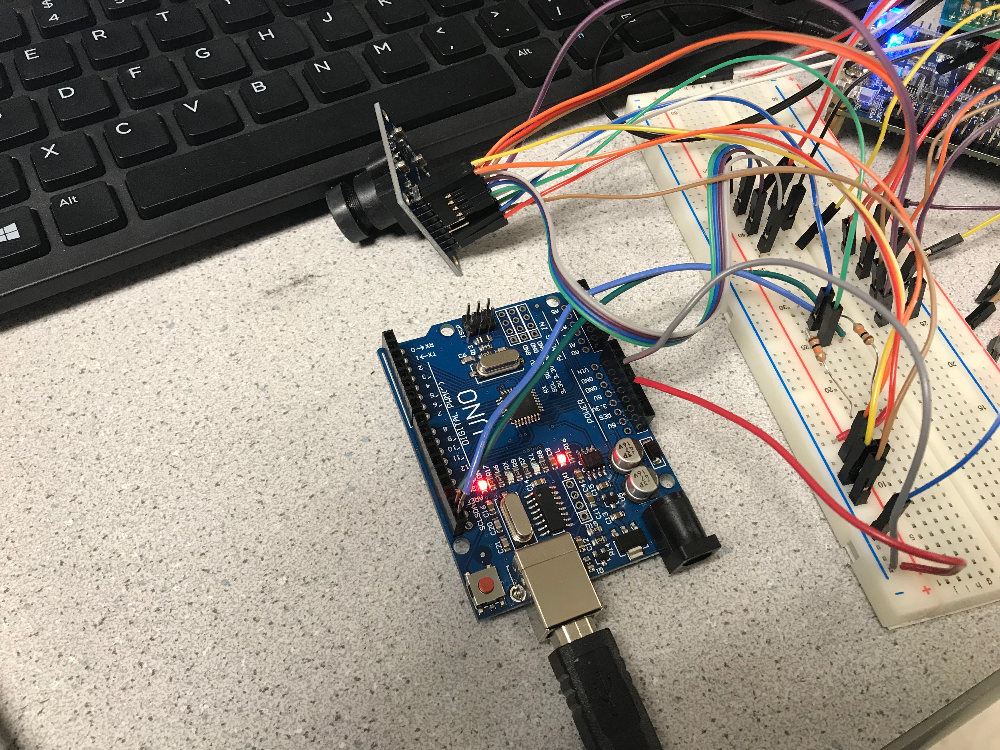

Lab 4: FPGA and Shape Detection
In this lab we split into two teams to develop an FPGA module capable of detecting basic shapes from a camera input, and pass this information on to the Arduino. This device will be mounted on the robot to identify these shapes on the walls of the maze.
Pre-Lab: PLL
In the pre-lab, we learned key things about the FPGA we are using, the DE0-Nano, and the camera we are using, the OV670. Knowing these facts will allow us to perform image processing.
Embedded memory on the FPGA is 74.25 kB; this is the maximum size of the buffer. Since the camera has 640x480 pixels at full resolution, with a maximum of 3 bytes per a pixel, neither color resolution nor resolution can be used at full capacity. Each entry in the ram has a minimum size of 8 bits, so the maximum number of entries for the minimum size is 76032.
Of the available pixel formats, the RGB565 (16bits/pixel) format provides the most information on the base colors making up each pixel.
In order to convert that pixel format to be accepted by the VGA module, (RGB565 to RGB332), we will use the following diagram:

Based on the timing diagrams on page 7 of the camera data sheet, we will sample on the positive edge of HREF.
Arduino Team
Nathalia and Vini worked on the arduino team.
Materials Used:- OV7670 Camera
- Arduino Uno
- DE0-Nano FPGA board

Camera Set Up: Registers
We began by looking through the documentation for the registers that were related to six main functionalities: 1)resetting the registers 2)scaling 3)using external clock as internatl 4)pixel resolution 5)color bar 6)vertical and mirror image manupilation. After determining the relevant resistors and their addresses (please see table for details), we defined these at the top of the code. We then sought the values needed to enable the desired properties -- enable scaling, enable colorbar, ect. (These are marked by bold numbers in the third column). We then converted the values from binary to hex and obtained the 'write' values for all registers. In the write key register function, we began by resetting registers to their original values before writing the enable values. As the reading and writing address of the camera differs by the value of the last bit (0 for write and 1 for read) we defined the camera address to the first seven bits, the last bit was dependant on whether the function calling the address was for reading or writing.Camera Set Up: Wiring To FPGA
We intially struggled with creating the proper connections between the FPGA board and the OV7670 Camera, as in the documentation, the diagram for GPIO-0 is to the left of GPIO-1 and the first pin for both GPIO beds is at the top. However, on the FPGA board, the GPIO-1 is to the left of GPIO-0 and the first pin for GPIO-1 is at the bottom of the board, diagonal to the first pin of GPIO-0.| Functionality | Register Description | Register ‘Write’ Values | Bit Adjustments |
|---|---|---|---|
| Reset all registers | Common Control 7 COM7 Default Hex: 00 Address Hex: 12 | 10000000 ************ 0x80 | SCCB Register Reset is Bit[7]; 0 is no change 1 Resets all registers to default values |
| Enable Scaling | Common Control 3 COM3 Default Hex: 00 Address Hex: 0C | 00001000 ************ 0x08 | Scale Enable is Bit[3]; 0 is disable 1 is enable |
| Use external clock as internal clock | Internal Clock CLKRC Default Hex: 80 Address Hex: 11 | 11000000 ************ 0xC0 | Bit[7]: Reserved Bit[6]: Use external clock as internal (no clock prescale available) |
| Set the camera to output the resolution you specified in Q4 and the pixel format you specified in Q2. The pixel format will take setting an extra register to fully specify | Common Control 7
COM7
Default Hex: 00
Address Hex: 12 _________________ Common Control 15 COM15 Default Hex: C0 Address Hex: 40 |
00001110
************
0x0E (*combined with QCIF output format and color bar activation) _____________ 11010000 ************ 0xD0 |
Bit[2] is RGB Selection (COM7[0] = 0 and COM7[2] =1) ___________________ Bit[7:6] = 11 (sets output range [00] to [FF]) Bit[5:4] is RGB 555/565 (must set COM7[0] = 0 and COM7[2] =1) |
| Enable a color bar test (takes setting 2 regs, neither of them are the SCALING regs) | Common Control 17
COM17
Default Hex: 8
Address Hex: 42 _________________ Common Control 7 COM7 Default Hex: 00 Address Hex: 12 |
00001000
************
0x08 ______________ 00001110 ************ 0x0E (*combined with QCIF output format and rgb selection) |
DSP Color Bar Enable
Bit[3];
0 is disable
1 is enable ______________________ Color Bar Bit[1]; 0 is disable 1 is enable |
| Vertical and mirror flip the output image (optional) | MVFP Default Hex: 00 Address Hex: 1E | 00110000 ************ 0x30 | Mirror/VFlip Enable
Bit[5] is Mirror
0 is normal
1 is mirror Bit[4] is VFlip 0 is normal 1 is vertically flip image |

Communicating with FPGA

FPGA Team
Joyce and Priya worked on the FPGA
Materials Used:- DE0-Nano FPGA board
- VGA adapter
Set Up
Successful Color Bar test

Work Distribution
The Lab 4 Work Distribution is as follows:
- Nathalia and Vini worked on the arduino team
- Joyce and Priya worked on the FPGA team
The Lab 4 Report Work Distribution is as follows:
- Nathalia and Vini worked on the arduino write up
- Joyce and Priya worked on the FPGA write up
- Joyce and Vini documented photos, Nathalia edited and uploaded photos
The website work distribution is as follows:
- Nathalia: Website Set Up and Maintenance